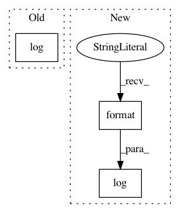

a6791c9b529080ee0fce634346a74fb4d13f928d,setup.py,,main,#,68
Before Change
die("Dependency installation failed!", 6)
print("\n\n")
log("Python Raster Function dependencies installed successfully.")
try:
arcpy = __import__("arcpy")
After Change
raise Exception("No ArcGIS")
print("\n\n")
log("Python extensions for raster functions in ArcGIS {} {} build {} successfully installed.".format(
info["ProductName"], info["Version"], info["BuildNumber"]))
except:
logging.warn("Unable to find ArcGIS 10.3.1 or above.")
In pattern: SUPERPATTERN
Frequency: 3
Non-data size: 3
Instances
Project Name: Esri/raster-functions
Commit Name: a6791c9b529080ee0fce634346a74fb4d13f928d
Time: 2015-05-29
Author: akferoz@esri.com
File Name: setup.py
Class Name:
Method Name: main
Project Name: pantsbuild/pants
Commit Name: c2425c81ddddf996b3aea6bf422031446382e245
Time: 2015-11-04
Author: john.sirois@gmail.com
File Name: contrib/go/src/python/pants/contrib/go/tasks/go_buildgen.py
Class Name: TemplateResult
Method Name: log
Project Name: Esri/raster-functions
Commit Name: 164b392ce45a1baa7523212c451fa3d20cb06450
Time: 2015-05-21
Author: akferoz@esri.com
File Name: setup.py
Class Name:
Method Name: main